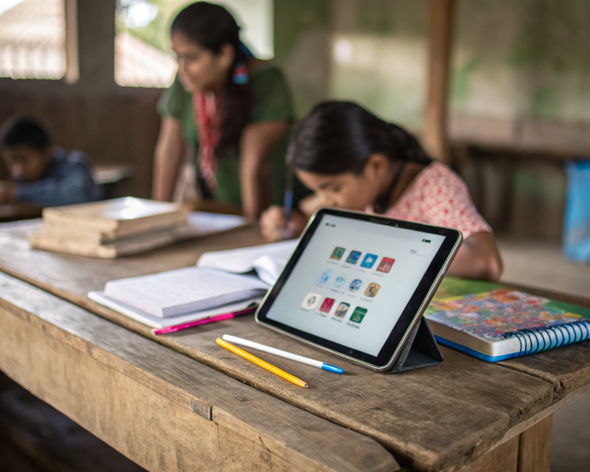
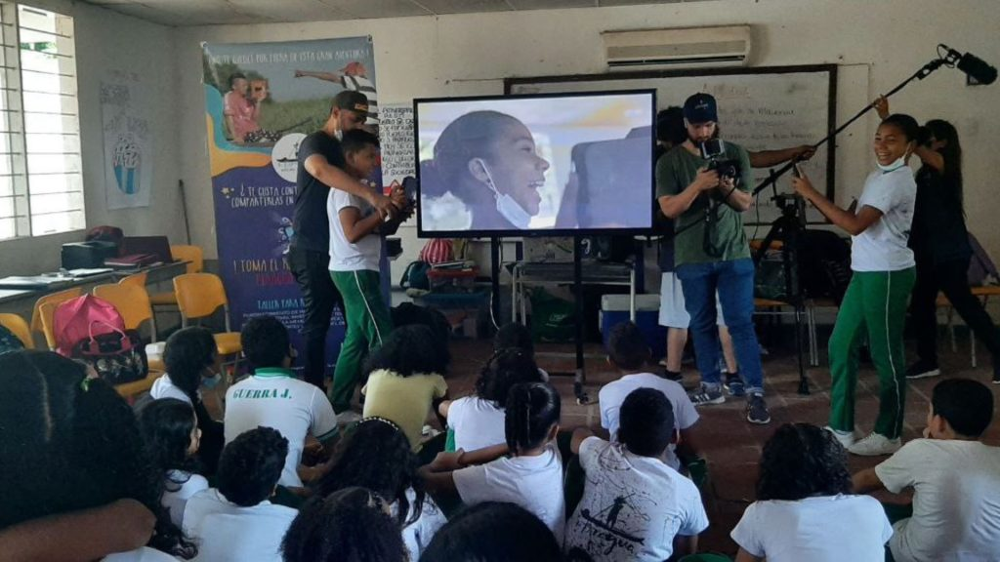

Alfabetización e Inclusión Digital
Formación para reducir brechas digitales y ampliar oportunidades.
La Estrategia de Alfabetización e Inclusión Digital es un programa orientado a promover el acceso, conocimiento y uso adecuado de las tecnologías de la información y la comunicación en comunidades insulares y poblaciones con acceso limitado a procesos de formación tecnológica. A través de jornadas pedagógicas, talleres prácticos, espacios de socialización y experiencias participativas, acercamos a niños, jóvenes, familias y líderes comunitarios al mundo digital desde una perspectiva sencilla, útil y adaptada a sus realidades. Nuestro enfoque busca fortalecer capacidades para el uso responsable de internet, las redes sociales, las herramientas digitales y los dispositivos tecnológicos, promoviendo una cultura digital basada en la seguridad, la creatividad, el aprendizaje y la participación ciudadana. Más que enseñar tecnología, impulsamos procesos de apropiación digital que permitan a las personas utilizar las herramientas tecnológicas como medios para acceder a información, generar oportunidades, fortalecer sus proyectos de vida y participar activamente en la sociedad actual.


